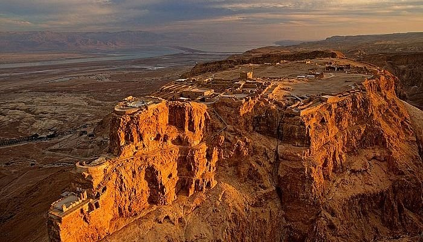
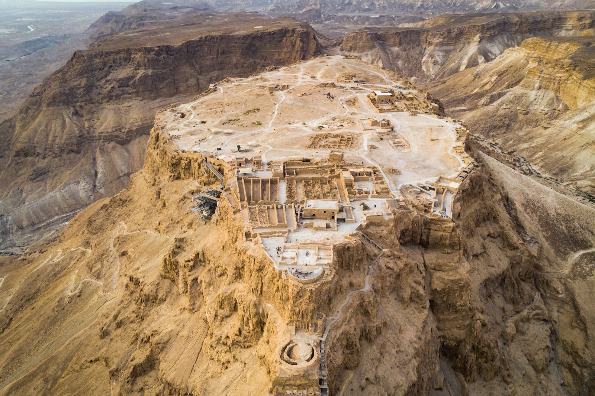
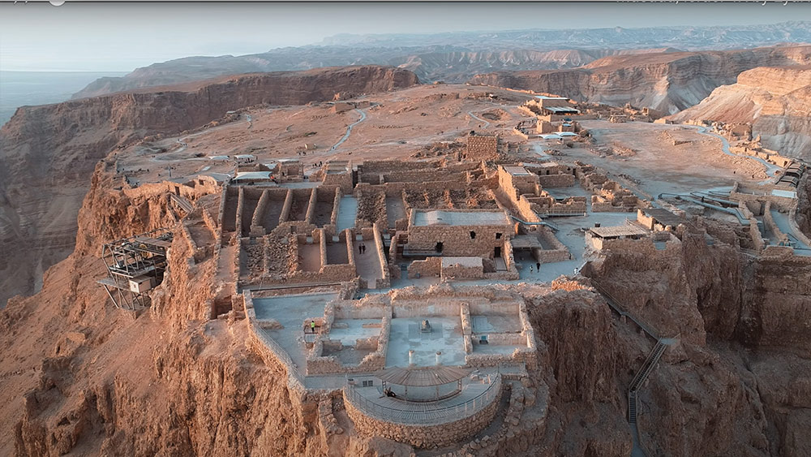
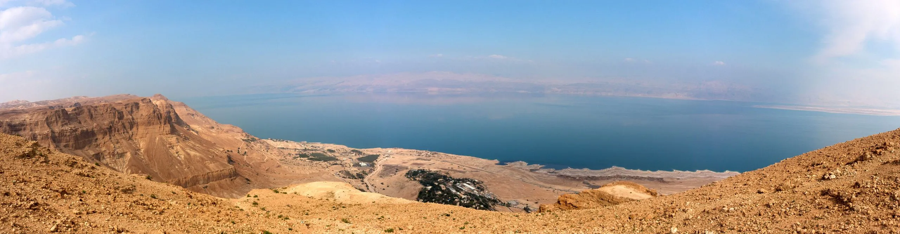

Location OverviewMasada is a mountain-top fortress complex in the Judaean Desert, overlooking the western shore of the Dead Sea in southeastern Israel. The fort, built in the first century BC, was constructed atop a natural plateau rising over 400 m (1,300 ft) above the surrounding terrain, 20 km (12 mi) east of modern Arad. | ||
|  |  |  |
|  | ||